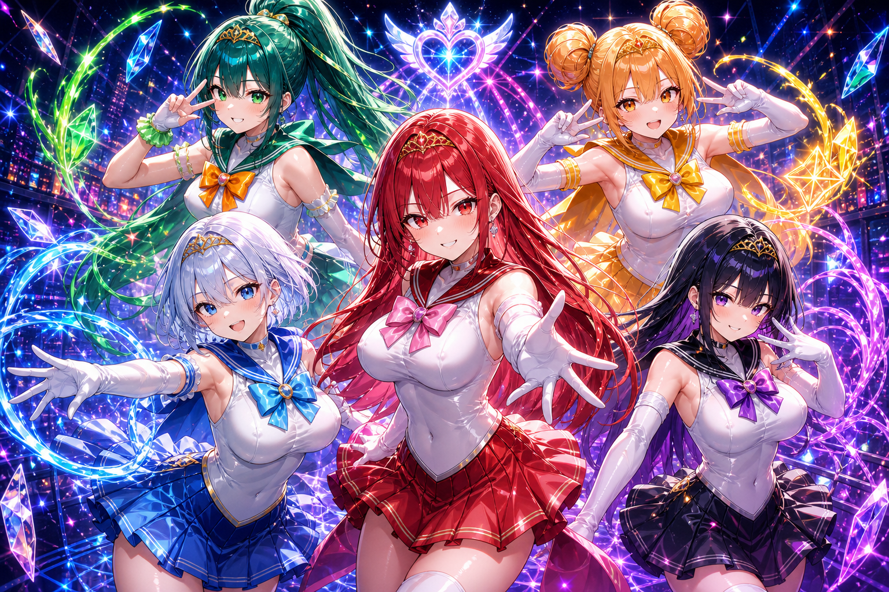
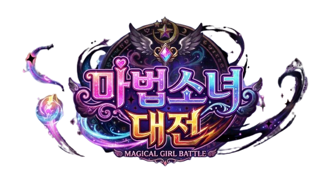
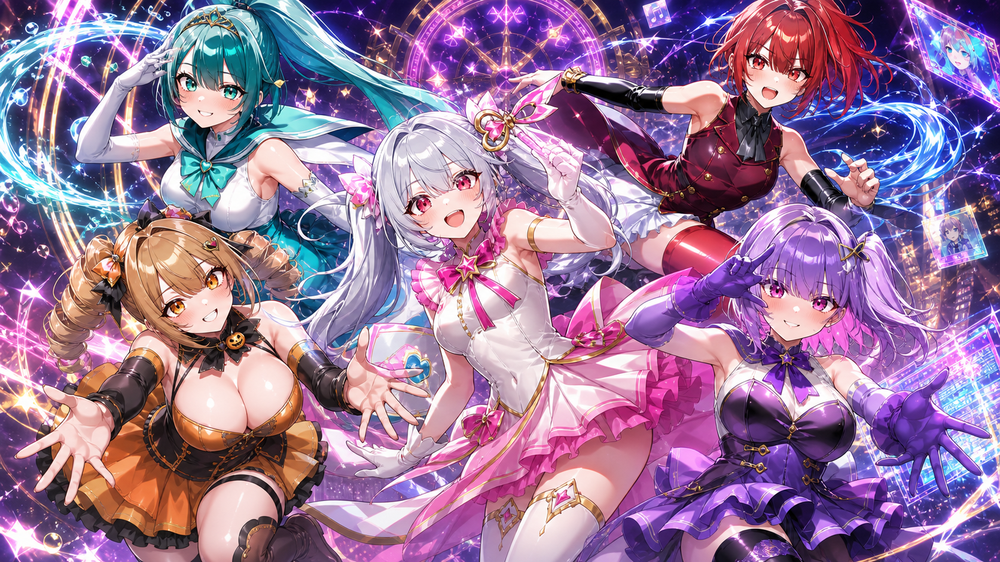
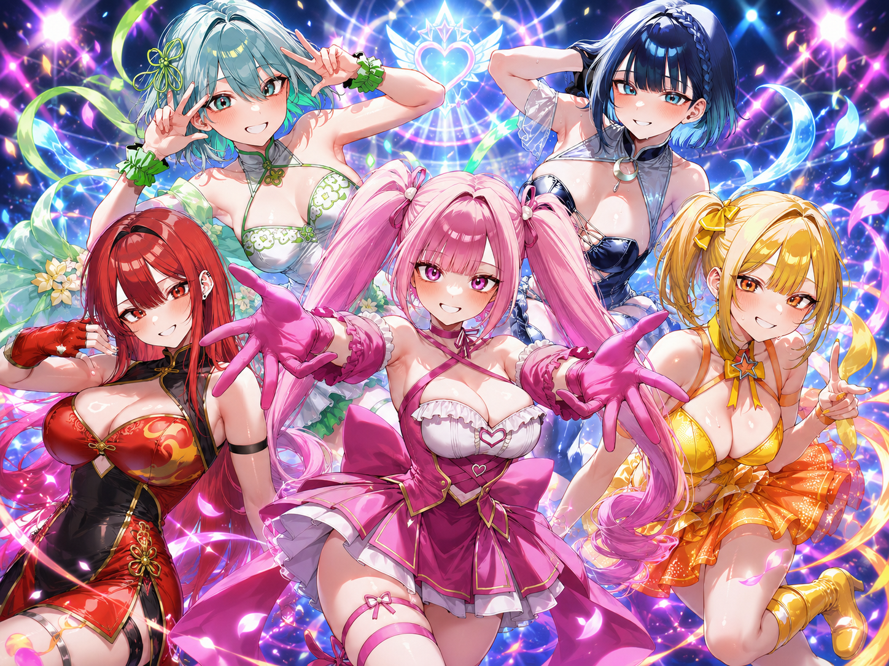
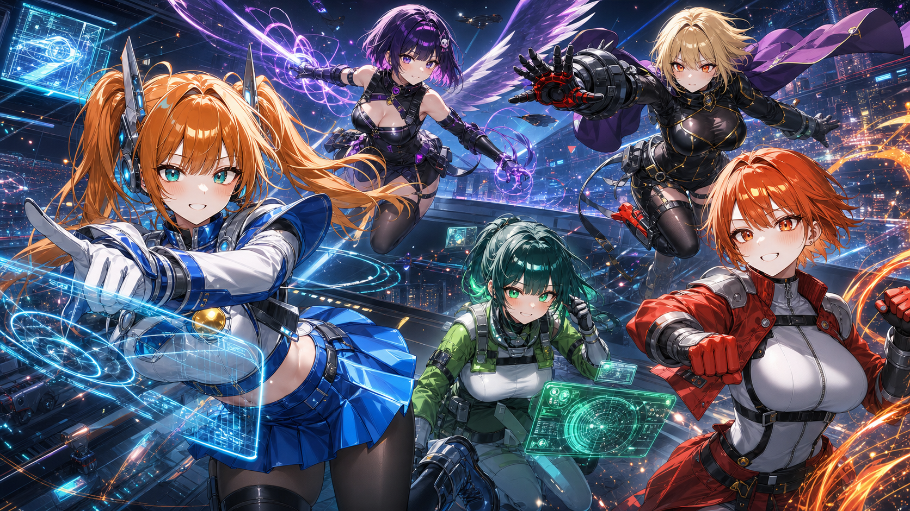
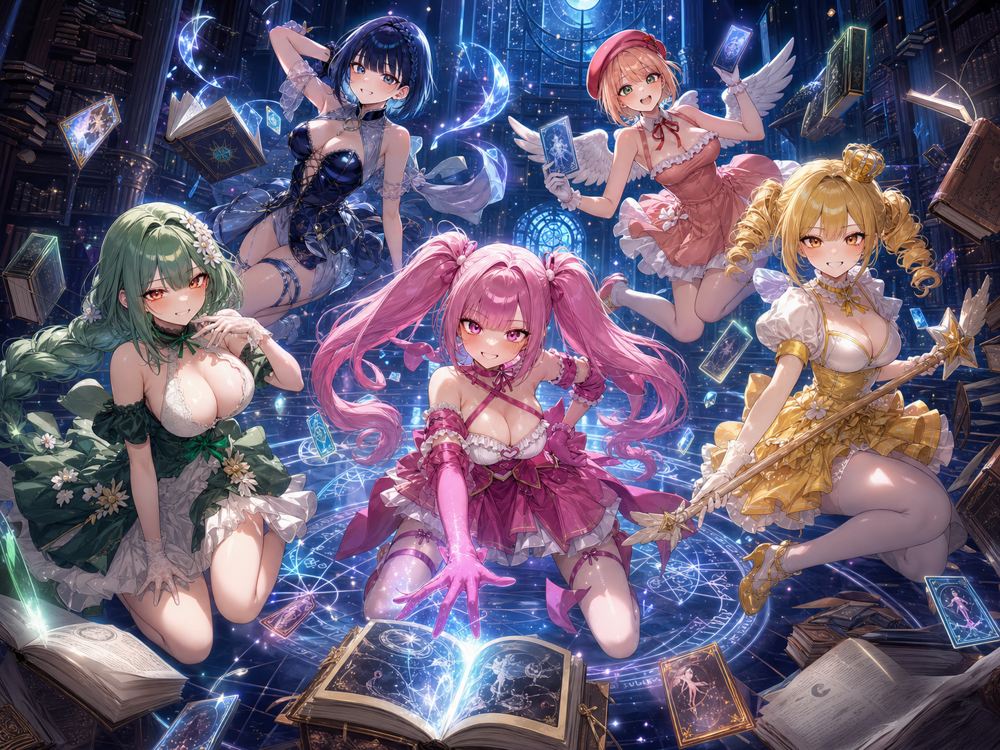
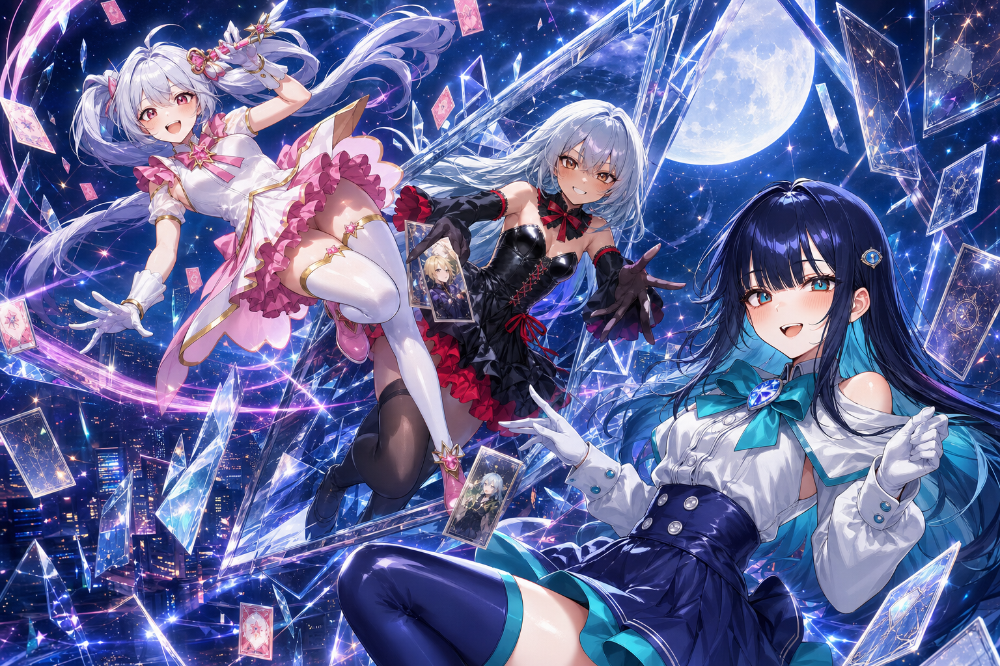
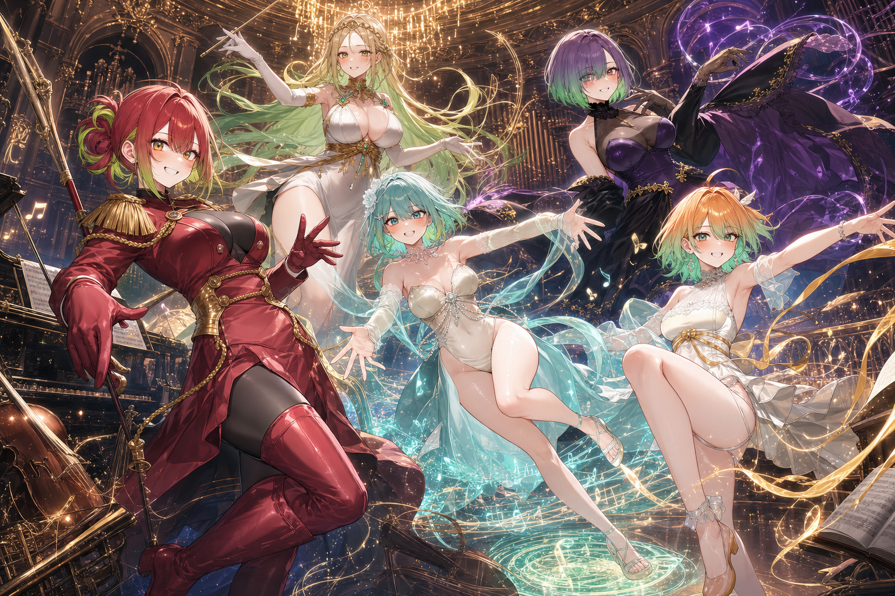
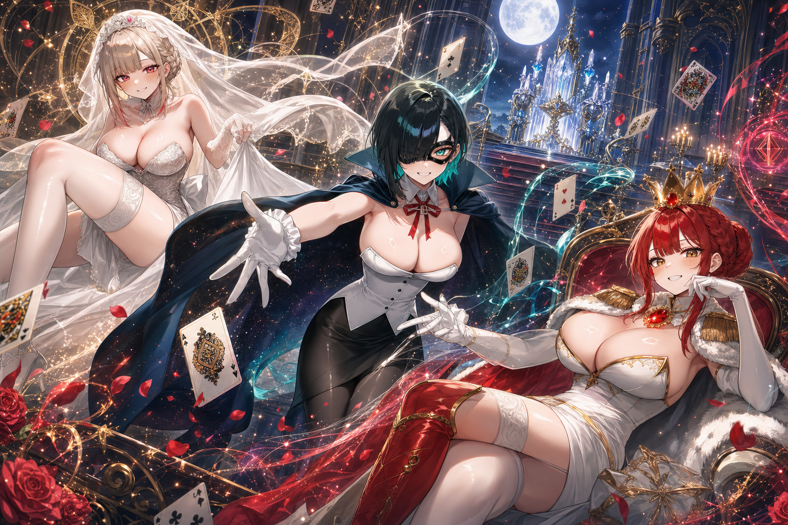

01 / 루나루나리움
오래된 왕가의 이름 아래, 구원과 보호의 맹세를 짊어진 자들.
전생 각성형 마법소녀
이들은 무력으로 상대를 파괴하기보다, 민간인의 피해를 억제하고 얽힌 전선을 통제하는 데 집중합니다. 차원의 경계에 세워진 이들의 굳건한 결계는 절망 앞의 인간을 구원하는 가장 든든한 방패가 됩니다.

차원 좌표 및 전장 동기화 중...
MAGICAL GIRL BATTLE
기적과 맹세, 그리고 엇갈린 소원들이 격돌하는 전장.
TEAMS

01 / 루나오래된 왕가의 이름 아래, 구원과 보호의 맹세를 짊어진 자들.
이들은 무력으로 상대를 파괴하기보다, 민간인의 피해를 억제하고 얽힌 전선을 통제하는 데 집중합니다. 차원의 경계에 세워진 이들의 굳건한 결계는 절망 앞의 인간을 구원하는 가장 든든한 방패가 됩니다.

02 / 원환소원은 기적이 되고, 기적은 기어코 뼈아픈 대가를 남긴다.
이들에게 전투는 끝없는 자원 소모와 인과율의 계산입니다. 오염과 마녀화라는 가혹한 대가가 기다리고 있음을 알면서도, 과거의 비극을 반복하지 않기 위해 기꺼이 처절한 굴레 속으로 걸어 들어갑니다.

03 / 펠로무너진 마음을 다시 일으키는, 가장 찬란하고 소란스러운 공명.
누군가를 향한 맹목적인 응원을 물리적인 마력으로 치환하여 싸웁니다. 압도적인 개인의 무력보다는 끈끈한 팀워크와 동료의 연결을 무기로, 절망이 깔린 전장을 순식간에 희망찬 무대로 뒤바꿔 놓습니다.

04 / 특마대기적조차 통제하고, 세계의 초상 위협을 진압하는 병기들.
특마대의 전장은 감정이나 기적이 아닌, 철저한 전술 연산과 규율로 통제됩니다. 압도적인 기동 타격과 한 치의 오차도 없는 집속 포격으로 인류의 질서를 가장 냉철하게 수호합니다.

05 / 정령관사라지는 이름과 기록을 붙잡는 고요한 숲의 수호자들.
각자의 상실을 극복해 낸 이들은 파괴가 아닌 '정상화'를 택합니다. 잊힌 존재들의 본명을 다시 부르고, 변질된 대상을 원래의 기록과 형태로 되돌리는 따뜻하고 굳건한 치유의 길을 걷습니다.

06 / 성휘균열을 넘어온 이방인, 돌아갈 곳을 품고 싸우는 생존자들.
돌아가야 할 가족과 동경하는 이를 가슴에 품은 채, 이계 영웅의 힘을 차원 카드에 투영하여 싸웁니다. 극심한 마력 반동 속에서도 살아남아 균열을 봉쇄하고 '귀환'하기 위해 낯선 세계에서 처절한 사투를 벌입니다.

07 / 심포불협화음이 울리는 전장을 다시 조율하는 이계의 악단.
가족 같은 오케스트라 극단이었던 이들의 마법은 소리처럼 번져나갑니다. 엇갈린 숨결과 부서진 박자를 모아, 혼란스러운 전장을 하나의 웅장한 교향곡으로 엮어내며 차원의 틈새를 메워갑니다.

08 / 프리마빛바래지 않는 맹세와 왕권의 잔향을 품은 구세대의 원형.
현대 마법소녀 체계의 뼈대를 세운 살아있는 전설들입니다. 우주 정거장을 거점으로 삼아, 타락하거나 상실된 원초의 사랑과 성물을 회수하며 구세대가 맺었던 절대적인 맹세를 끝끝내 완수하려 합니다.
CHARACTER
VILLAINS
ANTAGONIST